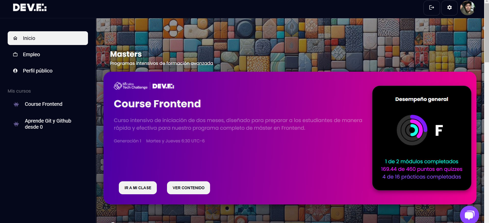
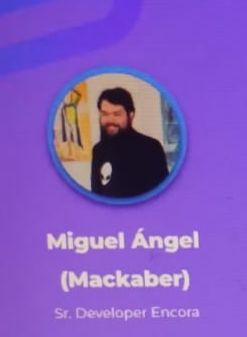
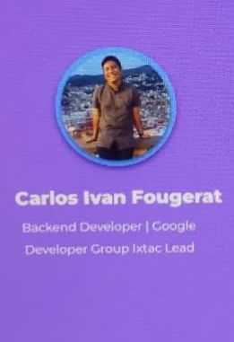
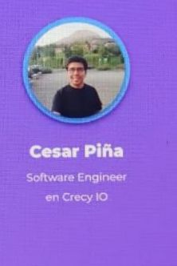
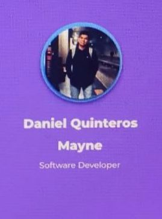

Dev. f es un lugar de gente intensa, ñoña en el mejor sentido de la palabra, que les gusta tanto lo que hacen que siempre están buscando más, crecer más y hacer más, es un rush de conocimiento. Es un programa intensivo de skills, para crear productos y soluciones con tecnologia.
¿En dónde aprendo?
En un campus virtual. Un campus virtual es una plataforma educativa que utiliza las tecnologías de la información y la comunicación (TIC) para ofrecer clases virtuales, recursos educativos, y otros servicios. Su objetivo es mejorar la calidad de la enseñanza y ofrecer la misma experiencia que en un instituto educativo.
En un campus virtual, los estudiantes pueden: asistir a clases virtuales, consultar a los profesores, participar en foros de asignaturas, acceder a recursos educativos, utilizar la biblioteca digital.

El desarrollo web con asistencia en IA es el proceso de crear sitios web y aplicaciones web con la ayuda de la inteligencia artificial. La IA puede ayudar en varias etapas del desarrollo web, desde la planificación y el diseño hasta la implementación y el mantenimiento.
La IA puede ser utilizada para:
Crear código: La IA puede sugerir o generar código automáticamente, lo que puede ahorrar tiempo y reducir errores. Por ejemplo, la IA puede ayudar a generar código para tareas repetitivas, como la creación de formularios o la implementación de autenticación.
Analizar datos: La IA puede ayudar a analizar grandes cantidades de datos para mejorar la experiencia del usuario y la eficiencia de la aplicación web. Por ejemplo, la IA puede ayudar a analizar patrones de comportamiento del usuario para personalizar la experiencia de navegación.
Mejorar la experiencia del usuario: La IA puede ayudar a personalizar la experiencia del usuario, como recomendaciones de contenido o productos. Por ejemplo, la IA puede ayudar a sugerir productos relacionados con las preferencias del usuario.
Detectar errores: La IA puede ayudar a detectar errores y problemas en la aplicación web, lo que puede mejorar la seguridad y la estabilidad. Por ejemplo, la IA puede ayudar a detectar vulnerabilidades en el código y sugerir soluciones para parchearlas.
.
En resumen, el desarrollo web con asistencia en IA es una forma de crear sitios web y aplicaciones web más eficientes, personalizadas y seguras, con la ayuda de la inteligencia artificial. La IA puede ayudar en varias etapas del desarrollo web, desde la planificación y el diseño hasta la implementación y el mantenimiento.
¿Que es Data Science?
La Data Science es un campo interdisciplinario que combina técnicas y métodos de la estadística, la informática, la matemática y la visualización de datos para extraer conocimientos y patrones valiosos de grandes conjuntos de datos.
La Data Science se enfoca en:
Recopilar y procesar datos: La recopilación y el procesamiento de grandes conjuntos de datos de diversas fuentes, como bases de datos, archivos, sensores y redes sociales.
Analizar y modelar datos: El uso de técnicas estadísticas y de aprendizaje automático para analizar y modelar los datos, con el fin de identificar patrones, tendencias y relaciones.
Interpretar y comunicar resultados: La interpretación de los resultados del análisis y la comunicación de los hallazgos de manera efectiva a audiencias técnicas y no técnicas.
La Data Science tiene aplicaciones en diversas industrias, como:
Salud: Análisis de datos médicos para mejorar la atención al paciente y desarrollar nuevos tratamientos.
Finanzas: Análisis de datos financieros para predecir tendencias del mercado y optimizar inversiones.
Marketing: Análisis de datos de clientes para personalizar campañas publicitarias y mejorar la experiencia del cliente.
Transporte: Análisis de datos de tráfico para optimizar rutas y reducir congestionamientos.
En resumen, la Data Science es un campo que combina técnicas y métodos de la estadística, la informática y la visualización de datos para extraer conocimientos valiosos de grandes conjuntos de datos.
¿Es recomendable estudiar Date Science en la actual situacion mundial?
Si, te recomiendo estudiar un Máster en Data Science. ¿Por qué? Porque es una de las carreras más demandadas y mejor remuneradas en la actualidad.
La Data Science es el futuro de la toma de decisiones en los negocios y la industria. Las empresas necesitan profesionales capaces de analizar y interpretar grandes conjuntos de datos para tomar decisiones informadas y mejorar la eficiencia.
Al estudiar un Máster en Data Science, podrás:
Desarrollar habilidades en alta demanda: Aprenderás a analizar y visualizar datos, a desarrollar modelos predictivos y a comunicar resultados de manera efectiva.
Acceder a oportunidades laborales de alto nivel: Las empresas están dispuestas a pagar salarios altos por profesionales con habilidades en Data Science.
Impulsar tu carrera: Un Máster en Data Science te brindará la oportunidad de ascender en tu carrera y alcanzar puestos de liderazgo.
No te pierdas la oportunidad de impulsar tu carrera y futuro laboral. ¡Estudia un Máster en Data Science y aprovecha las oportunidades que te brinda este campo en constante crecimiento!
¿Es recomendable estudiar Programación Web con IA en la actual situacion mundial?
Si, es recomendable estudiar un Máster en Programación Web con IA ¿Por qué? por que es una oportunidad única para impulsar tu carrera y futuro laboral en el campo de la tecnología.
Al estudiar un Máster en Programación Web con IA, podrás:
Desarrollar habilidades en programación web avanzada: Aprenderás a diseñar y desarrollar aplicaciones web escalables, seguras y eficientes utilizando las últimas tecnologías y frameworks.
Integrar la Inteligencia Artificial en aplicaciones web: Aprenderás a desarrollar aplicaciones web que utilicen técnicas de IA, como el aprendizaje automático, el procesamiento de lenguaje natural y la visión artificial.
Crear aplicaciones web innovadoras y disruptivas: Con la combinación de programación web avanzada y IA, podrás crear aplicaciones web que revolucionen la forma en que las personas interactúan con la tecnología.
No te pierdas la oportunidad de impulsar tu carrera y futuro laboral en el campo de la tecnología. ¡Estudia un Máster en Programación Web con IA y aprovecha las oportunidades que te brinda este campo en constante crecimiento!
¿Quienes me van a enseñar?

Miguel Angel | Sr. Developer EncoreAna Villanueva | Ingeniera Junior en AtentusDiego Lechuga | Estudiante de Ingenieria en ComputacionYaxche Manrique | EA to business and Marketing StrategistFrancisco Campos | React Developer | Full-Stack Web DeveloperAndres Sanchez | Product MultimediaDolores Parra |Formador en desarollo web y business intelligence

Carlos Ivan | Backend Developer | Google Developer Group Ixtac LeadMiguel Monterroso | Full-Stack Developer | JavaScript

Cesar Piña | Software Engineer en Crecy IO

Daniel Quinteros | Software Developer Daniel Silverio | Software Development | Engineer at Mariachi IO